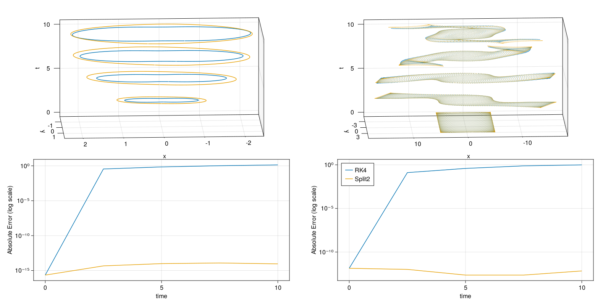

Charged Particle
In the second part of the tutorial we will treat a non-canonical system and show how to compute! Poincaré integral invariants for it. The system consists of a 2D charged particle subject to electromagnetic fields. The equations of motion are
\[\dot{x} = v,\; \dot{v} = E(x) + v × B(x)\]
where $x$ is the position vector, $v$ is the velocity, $E$ and $B$ are the electric and magnetic field and the mass and charge of the particle is set to one. For our example we will use a constant magnetic field of strength $10$ pointing in the z-direction and an electric field given by $E(x, y) = (-x, -y^3)$.
Integration
Again, we'll quickly implement our own integrators here, namely the Runge-Kutta method (RK4) and a second order symplectic splitting method for charged particles in electromagnetic fields.
using PoincareInvariants
using StaticArrays
E(x, y) = (-x, -y^3)
A(x, y) = 5 .* (-y, x)
B(x, y) = 10.0
Bx(x, y, Δx) = 10 * Δx # integral in x direction from x to x + Δx
By(x, y, Δy) = 10 * Δy # integral in y direction from y to y + Δy
struct Split2 end
function ϕx((x, y, vx, vy), dt)
Δx = vx * dt
return (x + Δx, y, vx, vy - Bx(x, y, Δx))
end
function ϕy((x, y, vx, vy), dt)
Δy = vy * dt
return (x, y + Δy, vx + By(x, y, Δy), vy)
end
function ϕE((x, y, vx, vy), dt)
(Δvx, Δvy) = dt .* E(x, y)
return (x, y, vx + Δvx, vy + Δvy)
end
function timestep(z, dt, ::Split2)
hdt = 0.5 * dt
z = ϕx(z, hdt)
z = ϕy(z, hdt)
z = ϕE(z, dt)
z = ϕy(z, hdt)
z = ϕx(z, hdt)
return z
end
struct RK4 end
function zdot((x, y, vx, vy))
ex, ey = E(x, y); b = B(x, y)
(vx, vy, ex + b * vy, ey - b * vx)
end
function timestep(z, dt, ::RK4)
hdt = 0.5 .* dt
k1 = zdot(z)
k2 = zdot(z .+ hdt .* k1)
k3 = zdot(z .+ hdt .* k2)
k4 = zdot(z .+ dt .* k3)
return z .+ dt .* (k1 .+ 2 .* k2 .+ 2 .* k3 .+ k4) .* (1/6)
end
"""
integrate(z0, dt, nsteps, nt, method)
start at `z0` and integrate the equations of motion using `method`.
Returns the timeseries as a vector of tuples. `nt` points are saved,
`nsteps` steps are taken from saved point to saved point and `dt` is the
size of each time step.
"""
function integrate(z0, dt, nsteps, nt, method)
out = Vector{NTuple{4, Float64}}(undef, nt)
z = out[1] = z0
for i in 2:nt
for _ in 1:nsteps
z = timestep(z, dt, method)
end
out[i] = z
end
return out
end
integrate(mat::AbstractMatrix, dt, nsteps, nt, method) = map(eachrow(mat)) do r
integrate((r[1], r[2], r[3], r[4]), dt, nsteps, nt, method)
endComputing the Invariants
Having gotten integration out of the way, we can move onto the invariants. For this system, the first invariant is given by
\[I_{1} = \int_{\gamma} v(x) + A(x) \, dx\]
where $A(x)$ is the magnetic vector potential as a function of the position vector $x$. The second invariant is given by
\[I_{2} = \int_{S} \omega_{ij} (q) \, dz^{i} \, dz^{j}\]
with the two-form $\omega$ given by
\[\begin{pmatrix} 0 & B & -1 & 0 \\ -B & 0 & 0 & -1 \\ 1 & 0 & 0 & 0 \\ 0 & 1 & 0 & 0 \end{pmatrix}\]
In code, we can define these forms as follows.
function oneform((x, y, vx, vy), ::Real, ::Any)
p = (vx, vy) .+ A(x, y)
@SVector [p[1], p[2], 0, 0]
end
function twoform(z, ::Real, ::Any)
b = B(z[1], z[2])
@SMatrix [ 0 b -1 0;
-b 0 0 -1;
1 0 0 0;
0 1 0 0]
endForms always have the signature form(z, t, p), where z is the phasespace position, t is a time and p is an arbitrary parameter. To use these forms to compute our invariants, we must create the setup objects FirstPI and SecondPI and initialise the curve and surface we want in phasespace.
pi1 = FirstPI{Float64, 4}(oneform, 1_000)
pi2 = SecondPI{Float64, 4}(twoform, 10_000)
I1 = 0
pnts1 = getpoints(pi1) do θ
10 .* (0, 0, sinpi(2θ), cospi(2θ))
end
I2 = 1_000
pnts2 = getpoints(pi2) do x, y
10 .* (y - 0.5, x - 0.5, 0, 0)
endThe curve is just a point in space, so the first integral invariant evaluates to zero. The second invariant is equal to $1000$ since, it is equal to the magnetic field of strength $10$ integrated over a $10$ by $10$ square. We can confirm this by computing the inital invariants.
@assert isapprox(compute!(pi1, pnts1, 52.3, "optional parameter"), I1; atol=10^(-15))
@assert isapprox(compute!(pi2, pnts2), I2; atol=10^(-11))By default p is nothing and t is zero, but as shown in the first line we can also explicitly supply a time and parameter if the forms we defined earlier had required them. compute! used on a time series accepts an iterable of times and an arbitrary parameter.
times = range(0.0; step=0.05 * 50, length=5)
series1 = integrate(pnts1, 0.05, 50, 5, Split2())
@assert all(compute!(pi1, series1, times, ("optional parameters", 3.7, 42))) do I
abs(I - I1) < 10^(-13)
end
series2 = integrate(pnts2, 0.05, 50, 5, Split2())
@assert all(compute!(pi2, series2)) do I
abs(I - I2) < 10^(-11)
endAgain, we can plot the results. The top two plots show the increasingly distorted curve and surface over time (projected onto x and y position components), while the bottom two plots show the error in the invariant over time for the two integration algorithms.

We see that RK4 does not preserve the non-canonical invariant while the splitting method does.